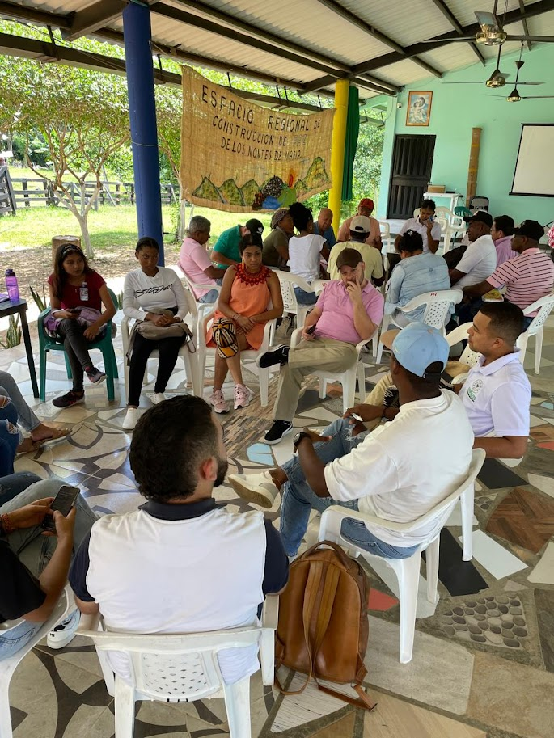
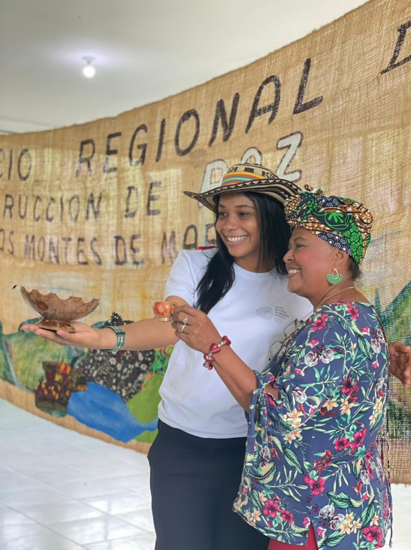
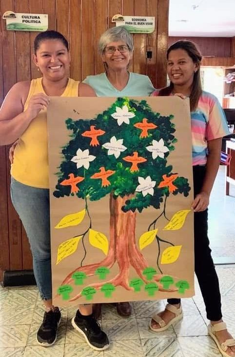
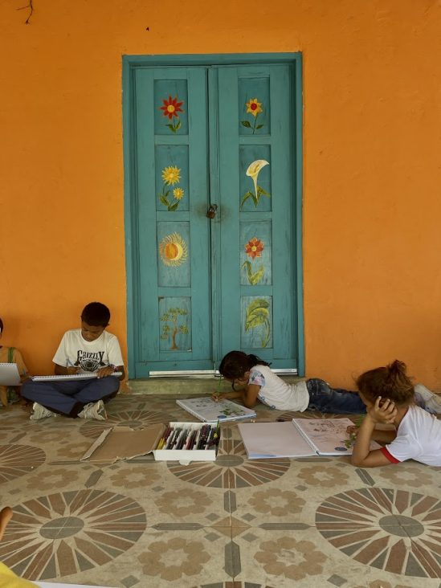

What we do
On Colombia’s Caribbean coast, communities face violence, displacement, and weak political leadership. In the Montes de María region, Sembrandopaz supports grassroots solutions through education, political participation, and community organizing. Its work spans conflict transformation, peacebuilding, human security, agroecology, tourism, food security, trauma healing, and resilience.

Communities seek basic services, healthcare, education, housing, and sustainable livelihoods. Sembrandopaz helps them strengthen leadership, engage in nonviolent collective action, and claim their rights through legal training, capacity building, and dialogue.

Challenging the dominant model of monocultures and extractive industries, Sembrandopaz promotes agroecological alternatives that protect the endangered Tropical Dry Forest while sustaining traditional farmers. This includes microloans, farmer exchanges, entrepreneurial initiatives, and conservation projects at its Experimental Farm and Nature Reserve.
The bird metaphor
At Sembrandopaz, we describe our work through the metaphor of a bird flying toward the Cultivation of Peace.
Head
Symbolizes leadership, guiding the vision of integral peace.
Wings
Political Culture and Economy for Good Living balance democracy, human rights, and restorative justice with sustainable economic, environmental, and productive initiatives.
Feet
Our practice models at Villa Bárbara Experimental Farm and the Morrocoy Nature Reserve, where peacebuilding becomes tangible and replicable.
Tail
Our administration, stabilizing the organization through finances, alliances, and communications.
Body
Our identity—values, ethics, art, spirituality, and cycles of reflection and action—that ensure integrity in all we do.

Ethics and spirituality
Sembrandopaz’s work is rooted in respect for individuals, communities, and diversity. Ethics means upholding human dignity beyond politics or social conventions, while spirituality is seen as awareness of our interconnection, not limited to religion. Through tolerance, humility, and listening, Sembrandopaz cultivates trust and respect with the communities it accompanies.

Art and esthetics
Art runs through all our work, from murals, theater, music, and weaving to crafts made from recycled materials. It expresses both the wounds of war and the hope of reconciliation, while also generating income and environmental awareness among women and youth.
Learn by doing
We follow a cycle of action and reflection, learning by doing. Over 20 years, each attempt—whether success or mistake—has strengthened our peacebuilding practice. By taking risks and learning from missteps, we walk alongside communities in building more sustainable and participatory processes.
“Here we are, with our hand on the plough, looking forward and with our hearts full of hope, underneath the shade of the tree that hasn’t sprouted yet, but we have enough faith that we can taste in our mouths the smooth flavor of the fruit that it will bear, and we can glimpse traces of the dreams of Montes de María.”
Our programs
Montes de María
The region and communities where Sembrandopaz works.
Political Culture
Democracy, human rights, and restorative justice.
Economy for Good Living
Sustainable economic, environmental, and productive initiatives.
Inspiring Models
Villa Bárbara Experimental Farm and Morrocoy Nature Reserve.